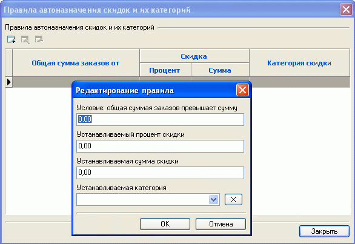

При увеличении числа покупателей магазина становится затруднительным вручную отслеживать объемы их покупок и назначать персональные скидки. Помочь в этом может создание правил автоназначения скидок и их категорий. Вызов окна "правил автоназначения..." осуществляется из главного окна программы "Заказы и покупатели - Правила автоназначения скидок и их категорий". Правило автоназначения может быть добавлено, отредактировано, удалено:

Для каждого правила может быть указано:
Проверка покупателя на соответствие определенному правилу происходит в момент его идентификации.
Применение правил осуществляется, если не запрещено автоназначение покупателю скидок и их категорий (см.каталог покупателей).
Например, для "особого" покупателя назначается скидка 7% независимо от суммы его покупок, а скидка, устанавливаемая по правилам автоназначения, составляет 3%. Тогда, чтобы для этого покупателя избежать автоназначения скидки 3% (вместо 7%), в каталоге покупателей для него следует указать опцию "Автоназначение скидок и их категорий запрещено".